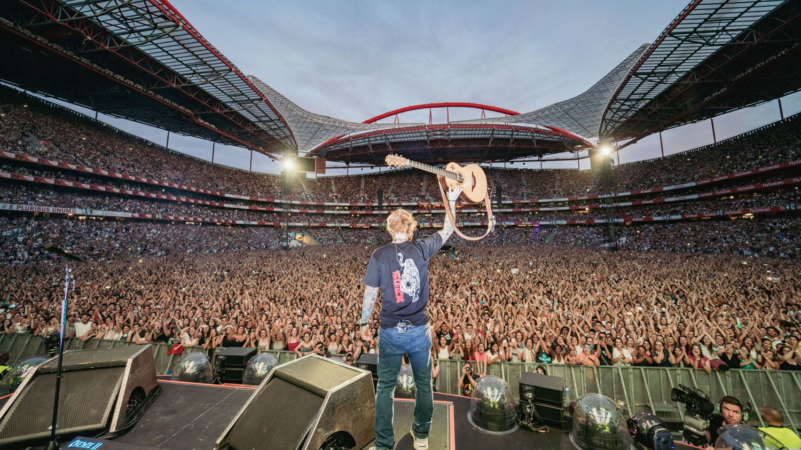
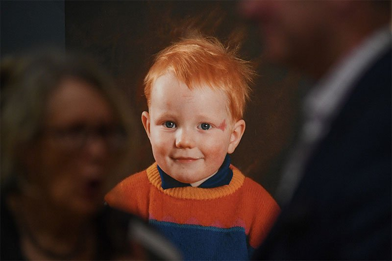
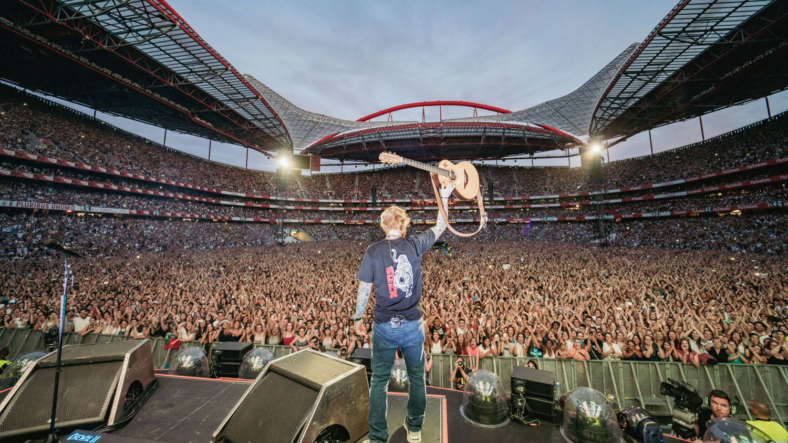
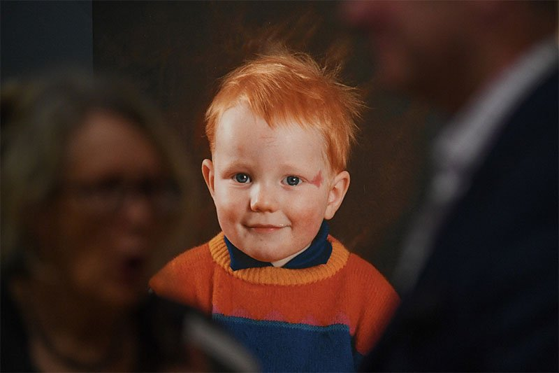
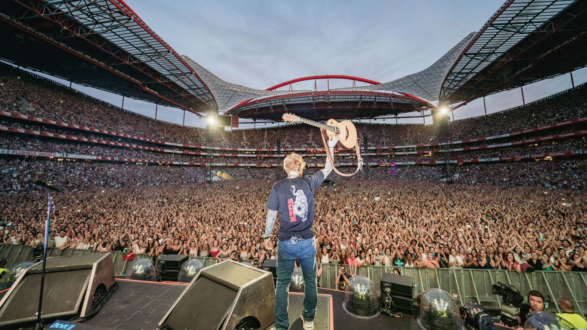
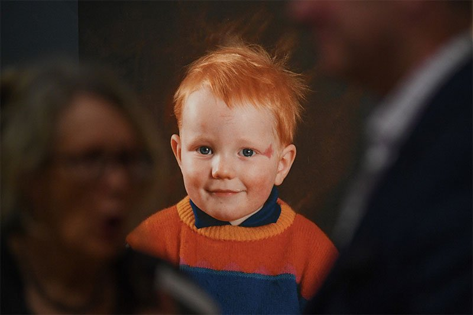
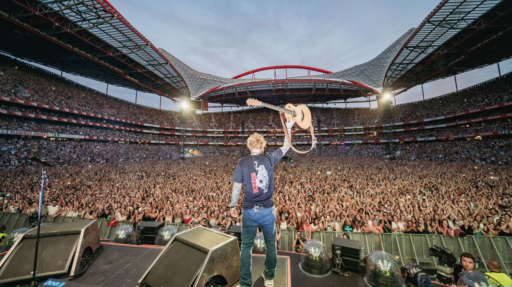
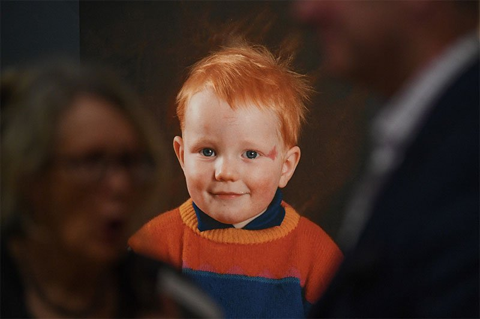

.jpg)
.jpg)
.jpg) 







CAREER BIGINNINGS: Edward Christopher Sheeran or also known as Ed Sheeran A British singer-songwriter born in February 17, 1991 at Halifax, West Yorkshire, England known for his genre-crossing style infused with elements of folk, rock, Rhythm and Blues, pop, and hip-hop. As a child, Sheeran was surrounded by art and music, with parents who worked in the arts and a brother who would go on to become a music composer.
2004-2010: Ed Sheeran began singing at their local church at 4 years old. He learned to play guitar at 11 year old and began writing songs during high school. During this years he also made it into the National Youth Theater in London and performed with the Youth Music Theater UK. In 2004 he released his first collection “Spinning Man” and in 2005 he released “The Orange Room”. In 2010 he recorded a studio session for Jamal Edwards’ SB.TV.
2011-2014: In 2011 Ed Sheeran released “No. 5 Collaboration Project” featuring UK artists such as Wiley, JME, Devlin, and Ghetts. The album reached number 2 in the iTunes charts on its first week. Within that month Ed had signed to Asylum Records and released his debut album “+” and sold 58,000 copies in a week which also became a top 10 hit in 8 countries. In 2012 Ed Sheeran won BRIT Awards: British Breakthrough Act and British Male Solo Artist. On the same year Ed also won Ivor Novello Awards: Best Song Musically And Lyrically for “The A Team”. In 2013 Ed Sheeran began performing at big arenas and stadiums across North America and he was nominated for Best New Artist at 2014 Grammy Awards.
2015-2017: Ed Sheeran in 2015 again won British Male Solo Artist and British Album of the year for “x” at the BRIT Awards and Songwriter of the year at the Ivor Novello Awards. Ed also build his own record label which he named as “Gingerbread Man Records”. In 2016 Ed Sheeran received his first two Grammy Award: Song of the year and Best Pop Solo Performances for his song “Thinking Out Loud” at Los Angeles, California. He released his third Album “Divide” in 2017, which become the best selling album of 2017 in the UK and US. He also received an MBE Award in 2017 from Prince Charles.
2018-2020: In 2018, Ed Sheeran won even more awards at BRIT Awards where he received Global Success Award, at Grammy Awards where he received Best Pop Solo Performace For “Shape of You” and Best Pop Vocal Album for “Divide”, and at Ivor Novello Awards where he received Songwriter of the Year. In 2019 he released his album “No. 6 Collaboration Project” featuring other artists which includes Khalid. Ed also won Global Sucess at BRIT Awards for the second year running.
2021-2023: In 2021, Ed releases album “=” and won a Songwrite of the year award from BRIT awards in 2022. he also released his ‘2step” remixes in 2022 with various different artists. On the same year he was revealed as the most played artist of 2021. In 2023 he had a documentary series called “The Sum Of It All” at Disney+. He also released his albums titled Subtracts and Autumn Variations in 2023.
PRESENT YEAR (2024): This 2024 Ed Sheeran has an ongoing world tour called “The Mathematics Tour”.